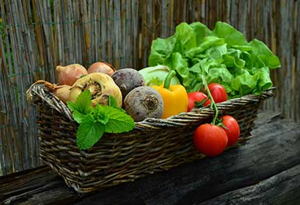

Welcome to Willow Gardens

Who we are
Beautiful gardens are at the heart of any community. Westfield, WI, wants Willow Gardens to be an entry point for all community members to participate in gardening. Community gardeners can use the land to grow their food, positively impacting their household food security. We provide outdoor recreational activities and a fun and friendly environment for people of all ages, incomes, and cultures to work the land together and share their gardening knowledge and ideas. Gardeners assist in site maintenance and management through volunteer commitments.
Click here to buy a plot!
What do you receive if you buy a plot?
- Land to rent, starter seeds, and on-site water.
- Community compost, garden tools, and wood chips when available.
- Measured, marked, and monitored plots.
- Mowed grass borders to prevent rodent habitat.
- Teaching materials and advice from our community mentors.
What Our Gardeners Are Saying
"Willow Gardens has been a wonderful experience for our family!"
– Marco Reyes
Read More Reviews